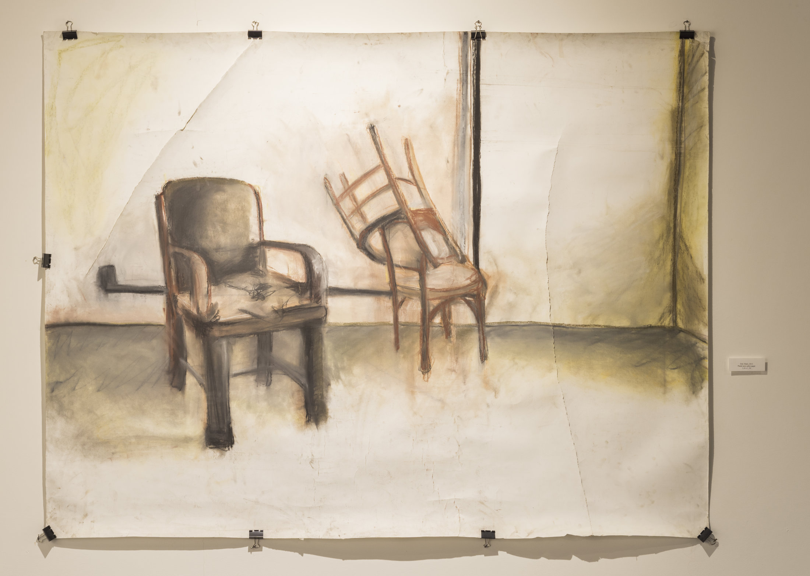
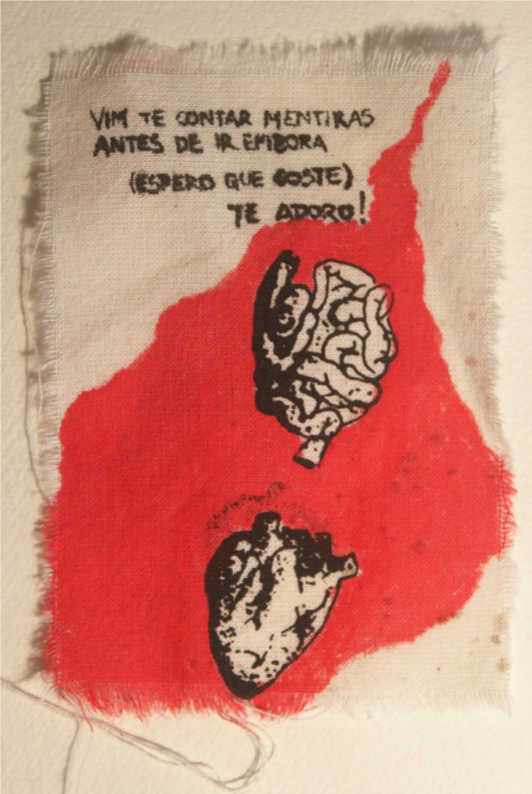
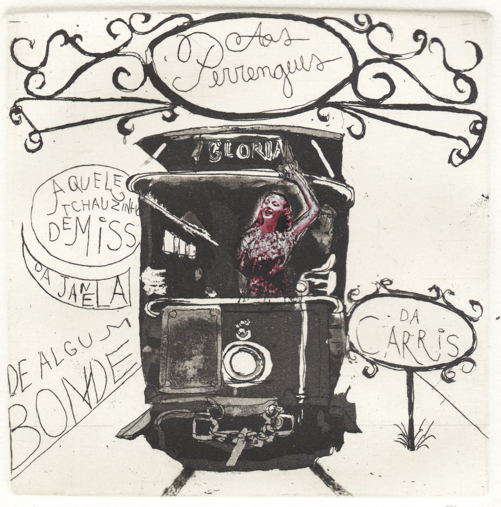
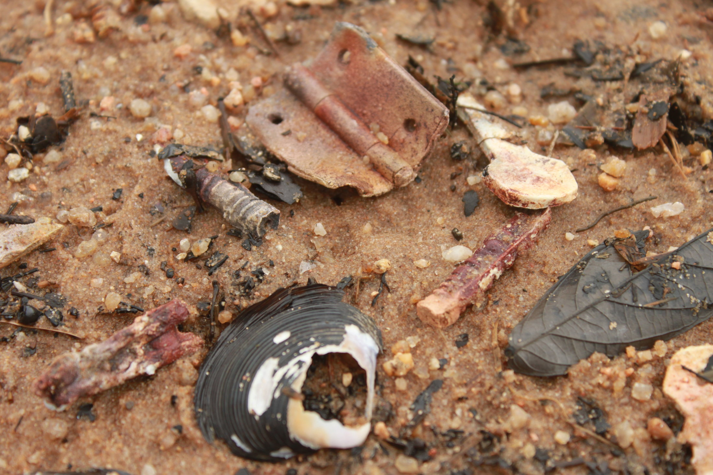
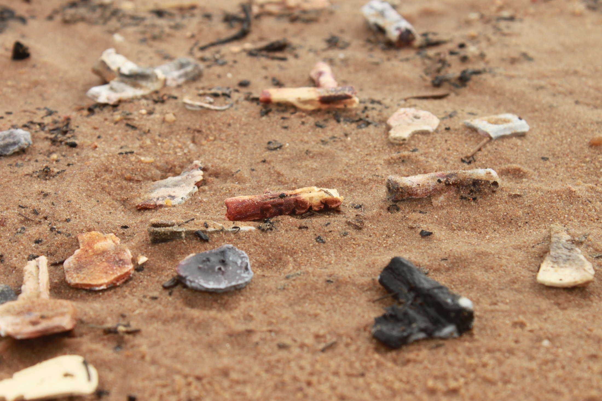

Out — Nov 2021
Laboratório de Afetos
Exposição individual que investiga os rastros afetivos deixados em objetos cotidianos. Desenhos, gravuras e instalações.

Mar — Mai 2020
Desobjetos
Série de objetos encontrados e resignificados. A matéria como memória. Exposição coletiva no Centro Cultural da cidade.

Ago 2019
Entre Linhas
Mostra de gravuras explorando a relação entre o gesto e a superfície. Xilogravura e metal sobre papel artesanal.

Jun 2018
Pinturenhos e Desenhuras
Pinturas e desenhos de pequeno formato reunidos em um único espaço. O cotidiano como ponto de partida para o improviso.

Nov 2017
Coisinha de nada
Trabalhos de pequena escala que questionam a monumentalidade da arte. Exposição realizada em espaço alternativo.

Abr 2016
Objetos sem função
Instalação com objetos industriais recolhidos e recontextualizados. Reflexão sobre o descarte e a permanência.